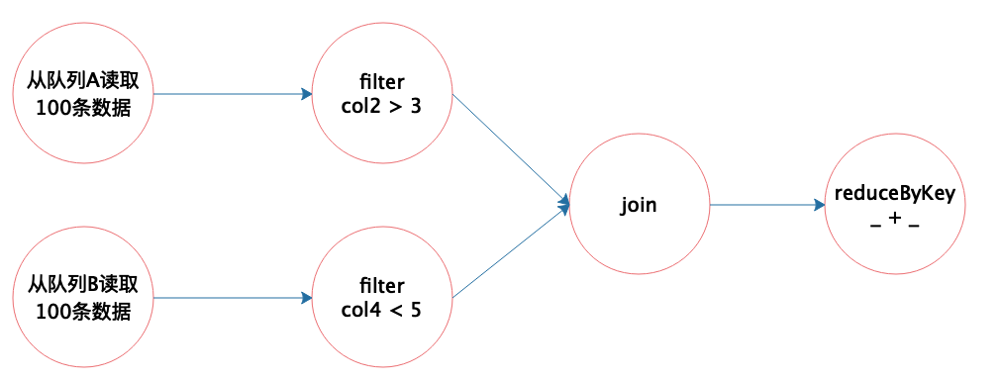

- 00 开篇词 为什么说每个软件工程师都应该懂大数据技术？.md
- 01 大数据技术发展史：大数据的前世今生.md
- 02 大数据应用发展史：从搜索引擎到人工智能.md
- 03 大数据应用领域：数据驱动一切.md
- 04 移动计算比移动数据更划算.md
- 05 从RAID看垂直伸缩到水平伸缩的演化.md
- 06 新技术层出不穷，HDFS依然是存储的王者.md
- 07 为什么说MapReduce既是编程模型又是计算框架？.md
- 08 MapReduce如何让数据完成一次旅行？.md
- 09 为什么我们管Yarn叫作资源调度框架？.md
- 10 模块答疑：我们能从Hadoop学到什么？.md
- 11 Hive是如何让MapReduce实现SQL操作的？.md
- 12 我们并没有觉得MapReduce速度慢，直到Spark出现.md
- 13 同样的本质，为何Spark可以更高效？.md
- 14 BigTable的开源实现：HBase.md
- 15 流式计算的代表：Storm、Flink、Spark Streaming.md
- 16 ZooKeeper是如何保证数据一致性的？.md
- 17 模块答疑：这么多技术，到底都能用在什么场景里？.md
- 18 如何自己开发一个大数据SQL引擎？.md
- 19 Spark的性能优化案例分析（上）.md
- 20 Spark的性能优化案例分析（下）.md
- 21 从阿里内部产品看海量数据处理系统的设计（上）：Doris的立项.md
- 22 从阿里内部产品看海量数据处理系统的设计（下）：架构与创新.md
- 23 大数据基准测试可以带来什么好处？.md
- 24 从大数据性能测试工具Dew看如何快速开发大数据系统.md
- 25 模块答疑：我能从大厂的大数据开发实践中学到什么？.md
- 26 互联网产品 + 大数据产品 = 大数据平台.md
- 27 大数据从哪里来？.md
- 28 知名大厂如何搭建大数据平台？.md
- 29 盘点可供中小企业参考的商业大数据平台.md
- 30 当大数据遇上物联网.md
- 31 模块答疑：为什么大数据平台至关重要？.md
- 32 互联网运营数据指标与可视化监控.md
- 33 一个电商网站订单下降的数据分析案例.md
- 34 A_B测试与灰度发布必知必会.md
- 35 如何利用大数据成为“增长黑客”？.md
- 36 模块答疑：为什么说数据驱动运营？.md
- 37 如何对数据进行分类和预测？.md
- 38 如何发掘数据之间的关系？.md
- 39 如何预测用户的喜好？.md
- 40 机器学习的数学原理是什么？.md
- 41 从感知机到神经网络算法.md
- 42 模块答疑：软件工程师如何进入人工智能领域？.md
- 所有的不确定都是机会——智慧写给你的新年寄语.md
- 第2季回归丨大数据之后，让我们回归后端.md
- 结束语 未来的你，有无限可能.md
31 模块答疑：为什么大数据平台至关重要？
你好，我是李智慧。今天我来做模块四的答疑，主题是为什么大数据平台至关重要。
我前面说过，软件大体可以分为两种，一种是为最终用户开发的，实现用户需要的业务功能；另一种是为软件工程师开发的，供软件工程师使用。我在专栏前三个模块讲到的各种大数据产品，都属于后一种，最终用户不可能自己提交一个Hadoop程序去执行大数据计算，这是软件工程师的工作，因此大数据产品也是为软件工程师开发的。而如何让软件工程师能够便捷地提交各类大数据计算程序给大数据计算引擎去执行，如何将用户实时数据转化为大数据产品的数据源，如何利用好大数据的计算结果，这些都是大数据平台的职责范围。
大数据平台将互联网应用和大数据产品整合起来，构建成一个完整的系统，将实时数据和离线数据打通，使数据可以实现更大规模的关联计算，挖掘出数据更大的价值，从而实现数据驱动业务，通过数据统计发现业务规律（也就是机器学习模型）。而利用这个规律对未来的数据进行分类和预测，使系统呈现出智能的特性，也为互联网未来发展和人类的生产生活创造了无限可能。
大数据平台将互联网应用和大数据产品整合起来，一方面使互联网应用变得更加智能、强大；一方面也使得大数据产品实现技术落地。技术不同于科学，科学拓展人类的认知边界，而技术是人们改造世界的工具，科学的成果可以转化为技术；而技术真正能够改造世界，需要技术落地，真正应用到生产过程中。用我们熟知的Hadoop为例，即使它的技术再厉害，如果没有具体应用，没有被广泛使用，同样也很难说明它有多大的价值。所以技术落地使技术产品实现真正价值，也正是大数据平台使得大数据技术产品可以落地应用，实现了自身价值。
所以，大数据平台不但对应用至关重要，对各种大数据技术产品也至关重要。事实上，大数据平台对大数据工程师的技术进阶也非常重要。
这些年来，多次有同学向我咨询如何成为软件架构师。软件架构师，顾名思义，就是从事软件架构设计的那个人。而关于软件架构，其定义是“关于软件各个组成部分及其关系的描述”，所以软件架构师就是对软件各个组成部分及其关系进行设计和描述的那个人。软件的各个组成部分包括业务组件模块，比如用户管理模块、订单处理模块，也包括技术组件，比如缓存组件、消息队列组件，当然还有大数据技术组件。
软件架构师要想设计出一个符合业务场景，便于开发维护的软件架构，必须要对业务很熟悉，还要对技术很精通。要将复杂的业务拆分成较小的、低耦合高内聚的、便于开发维护的模块；还要对各种技术组件的功能特性、技术原理、使用和调优方法很熟悉。软件架构师需要选择合适的技术组件应用到自己的软件架构中，并在将来的开发使用过程中指导工程师正确使用这些技术组件，还要能根据业务需要对这些技术组件进行适当的调优甚至改造。
所以，我的观点是，从按照需求进行业务功能开发的程序员进阶到软件架构师，并不是随着经验积累、工作年限的增加就能自动完成的。如果你一直按照别人给定的技术架构和业务需求开发代码，你很难从更高的层面去思考软件的架构是如何设计出来的，也缺乏明确的目标去掌握那些真正有难度的、底层的技术。
因此帮助你实现技术进阶，同样也是这个专栏当初设计的一个初衷。专栏前面三个模块希望你能了解、掌握大数据技术产品组件的原理，然后通过模块四，将各种大数据技术产品融会贯通，应用到自己的开发实践中，构建一个大数据平台。而通过专栏系统的学习，一方面可以实现大数据的业务价值，另一方面也可以使自己从业务开发者的角色，逐步进阶成为软件架构设计者的角色。
我的专栏的名字叫《从0开始学大数据》，确实不需要你有任何大数据背景就可以跟着专栏开始学习大数据，但是我并不希望你学完专栏后，还只是打了一个大数据的基础，我更希望你能掌握构建大数据系统大厦的能力。这当然会有难度，学习过程中也会有挫折感，但是我依然希望你能坚持学习，即使有些技术不能完全掌握，但是至少可以让你的视野达到一个更高的高度，去感受架构师如何思考架构设计，并可以把收获应用到未来的学习工作中，让自己有不断进步的目标和动力。
下面我来回答一下“helloWorld”同学提出的一个问题。
老实说我没有做过这类产品的开发，也不太了解腾讯的这个流计算平台，仅仅说一下我对这个功能实现的思路。
通过前面的学习我们知道，Spark实现分布式计算的最小单位是计算任务（Task），每个任务针对一个不同数据分片进行计算，相同的一组任务组成一个任务集（TaskSet），通常一个任务集就是一个计算阶段（Stage），所有的计算阶段组成一个有向无环图（DAG）。
所以这个有向无环图就是Spark分布式计算的核心，根据这个有向无环图的依赖关系，不断地将任务分发给计算集群去计算，每个计算进程领到计算任务后，执行任务对应的代码，最后完成大数据计算。
既然根据大数据应用程序代码可以生成有向无环图，那么能不能直接把这个有向无环图画出来，然后根据这个有向无环图进行分布式计算呢？当然可以，这就是问题中提到的可视化编程的思路。
我在专栏第12期讲Spark编程时提到，我们了解到Spark提供了一组针对大数据的计算函数，包括转换函数和执行函数两种，事实上每个计算任务就是由一个或多个这样的函数构成的。那么可视化编程的时候，只需要将这些函数拖动过来根据数据处理逻辑组成有向无环图即可。
我们还知道，Spark的这些计算函数的输入参数是另外一个函数，也就是真正的运行逻辑，比如fliter函数的输入是一个布尔表达式，比如 x > 100，以判断数据是否进行下一步处理。
所以这样一个可视化编程环境也会预置一些这样函数，以可视化节点的形式提供，开发者拖动这些节点，并在节点上输入一些简单表达式（或者拖动一些表达式符号和字段名称进来），就可以完成大数据可视化编程了。我画了一个简单的示意图。

开发这样的有向无环图的可视化编辑工具技术非常成熟，只要根据这个图形生成一个XML之类的描述文件，交给一个执行引擎去执行就可以了。
至于如何根据一个XML文件执行计算逻辑，可以参考Hive的实现。在专栏第11期我们也学习过，Hive QL经过语法分析、语义解析与优化后生成一个执行计划，这个执行计划也是一个有向无环图。Hive用XML描述这个有向无环图，并提交给Hive的执行引擎，执行引擎解析XML，并利用Hive内置的Operator算子构建MapReduce作业，提交给Hadoop执行。
有兴趣的同学可以在Spark上尝试一下，根据XML生成Spark代码，再把这个代码编译后提交给Spark引擎执行，这个过程应该并不难。
最后我贴出@纯洁的憎恶、@方得始终、@杰之7、@小千、@warm_day这几位同学的留言，希望他们的思考对你也有所启发。


欢迎你点击“请朋友读”，把今天的文章分享给好友。也欢迎你写下自己的思考或疑问，与我和其他同学一起讨论。
© 2019 - 2023 Liangliang Lee. Powered by gin and hexo-theme-book.